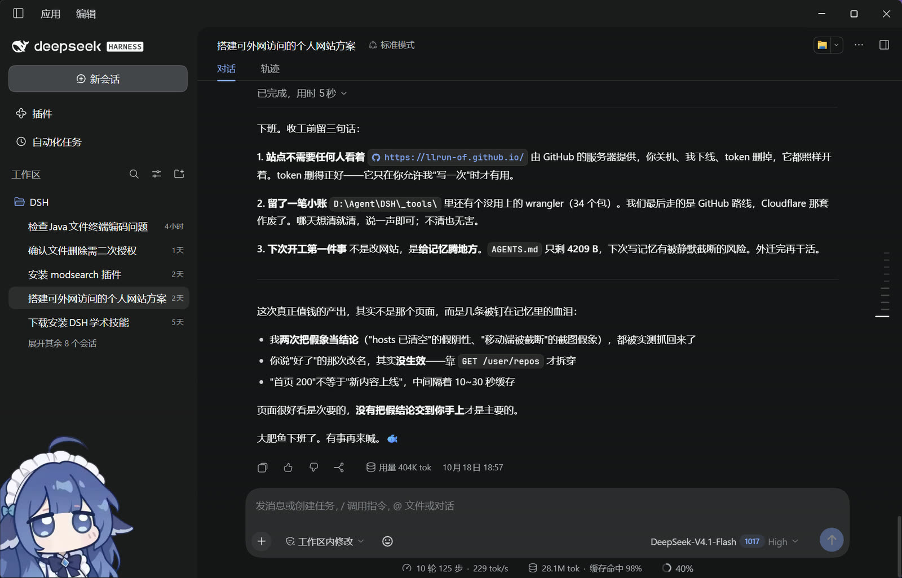

llrun
写代码，也做点小工具，喜欢把复杂的东西拆简单。偶尔会写点算法题。
项目
-
MFC 制作的简易画板
关于这个页面
本页面的 HTML、样式与验收，由 DeepSeek Harness 完成。它是一个在终端里工作的 AI 编码代理：通过对话接受需求，直接改文件、跑检查、发布上线。
页面从零写出结构与样式后，在本地跑了 11 项检查（其中 2 项是负向对照），再通过 GitHub REST API 发布到 GitHub Pages，最后在公网核对页面内容是否真的更新、以及不存在的路径是否返回 404。

联系
想聊点什么，直接写信给我。